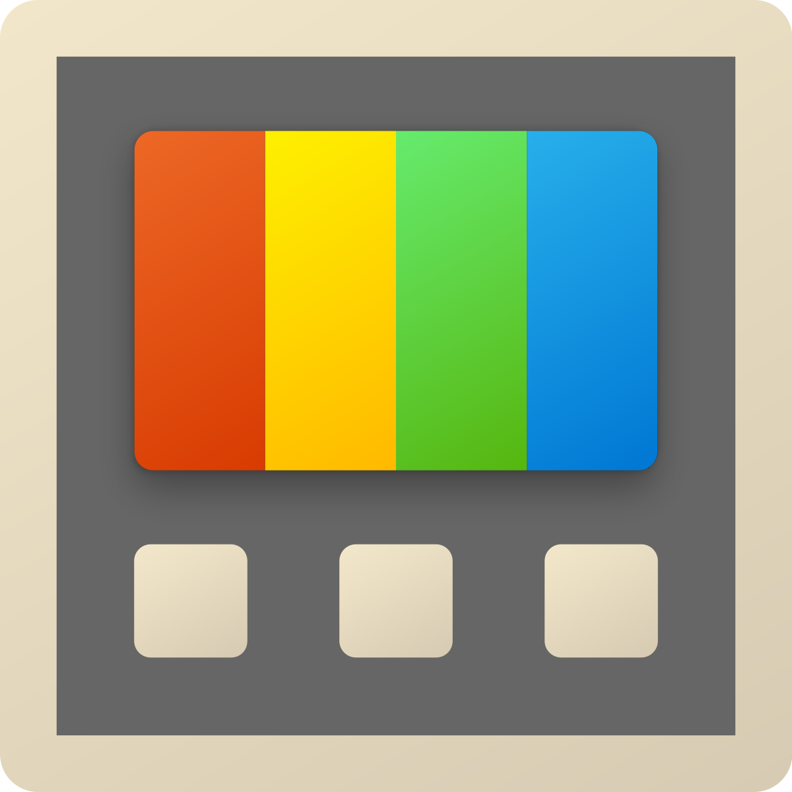
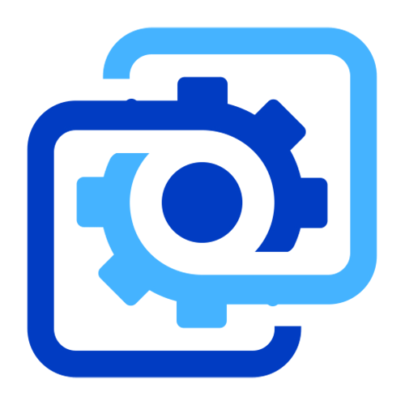

Programs You Should Know About!
Below is a collection of programs that I use daily and that new PC users could benefit from knowing about.
Simply click on the program icon to be taken to the software's official download page!
| Program | Description |
|---|---|
 Steam |
Originally created by Valve in 2003 to sell the games they developed, Steam now has the largest library of third-party games available to purchase anywhere, along with a slew of social features that make it a no-brainer for PC gamers. It also hosts a variety of non-gaming software, and even operates a public marketplace for buying and trading digital items. |
 Epic Games |
Created in 2018 as a direct competitor to Steam, Epic Games also features a vast library of games to purchase and play. Though their social features are lacking, they stay competitive with Steam by having worthwhile exclusives, and by offering users two new games for free every month. I have 63 well known games in my Epic library that I didn't have to spend a dollar on. I just check the store once a month. I recommend anybody interested do the same, you'll be surprised by the games they give out for free. |

Discord |
Discord is a free Voice over Internet Protocol (VoIP) service that allows users to call, videochat, and message each other. More importantly, it allows users to create custom groups called servers and provides flexible tools to customize them to fit certain needs. Not only is it useful for gamers who want to play with their friends, it's useful for employees who want to communicate effectively with their team. Even my current on-campus job is using a discord server for communication. |
|

Microsoft Powertoys |
PowerToys was created by Microsoft for PowerUsers—people who want to get the most out of the computer they're using. It has several different features to help you work more efficiently, but my favorite is FancyZones. It allows you to set up areas of your screen as anchors to quickly snap windows onto. I use it to comfortably work with 6 or 7 different windows at once. |
|

Wallpaper Engine |
Available to purchase through Steam, this program allows you to have an animated wallpaper on your desktop. Users have already uploaded thousands of wallpapers to choose from, and it also offer tools to customize or create your own wallpapers. They can react to your mouse movements, your clicks, or even the music you have playing. Live wallpapers add an incredible uniqueness to your desktop environment. |
|
Free Download Manager |
Free Download Manager is great for downloading multiple files at once, and even better for downloading very large files. Sometimes a browser's built in manager has trouble with these situations, but FDM never does. It has the added benefit of not requiring the browser to be open to download the file. If you're downloading files often, especially large ones, Free Download Manager can save you hours of hassle. |